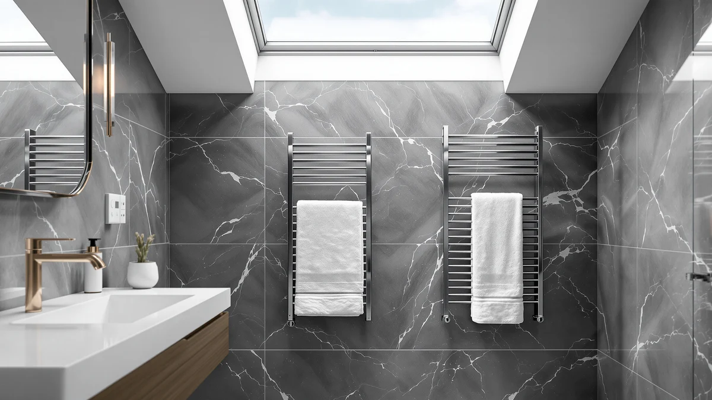

Quick Answer
In this aglucky towel warmer for review comparison, the AGLUCKY Towel Warmer for Bathroom is the only bucket-style unit, heating towels, robes or blankets inside a 40-liter tub for $159.99. The ENZE and COZYBASE wall racks below are worth a look if you want a mounted bar design or a lower price instead of a bucket.
Our pick: AGLUCKY Towel Warmer for Bathroom, $159.99 Check Price on Amazon
Things to Know Before You Buy
- Price across the four towel warmers in this review runs from $151.99 to $159.99, with the AGLUCKY sitting at the top of that range alongside one of the two ENZE listings.
- Format differs sharply: the AGLUCKY is a 40-liter bucket you load towels, robes or blankets into, while the ENZE and COZYBASE models are wall-mounted bar racks you drape towels over.
- Heat-up speed: the AGLUCKY lists a 1-minute warm-up with high heat reached within about 6 minutes, and the two ENZE racks claim 120 degrees Fahrenheit within 5 minutes.
- None of these four listings show a published star rating or review count, so this review leans on verified owner feedback and spec comparisons rather than aggregate scores.
- Installation needs differ: the AGLUCKY is freestanding with no mounting required, while the ENZE and COZYBASE racks mount to a wall and offer hardwired or plug-in wiring.
This aglucky towel warmer for review lines up the $159.99 AGLUCKY Towel Warmer for Bathroom bucket against three wall-mounted alternatives, because stepping out of a hot shower onto a cold towel undercuts an otherwise good morning. A 40-liter bucket that can hold a towel, a robe and a hand towel together solves that problem differently than a bar rack that warms one towel at a time. We researched four current listings, from $151.99 to $159.99, to see which format and price gives you the most for your money.
The AGLUCKY's bucket design sets it apart from the ENZE and COZYBASE racks covered below, both of which mount to a wall and warm towels draped over bars rather than enclosed inside a tub. That difference in format matters more than price here, since the AGLUCKY sells for the same $159.99 as one ENZE listing while doing a different job entirely. Below, we break down what each option offers, where it falls short, and who should buy something else instead.
Why You Should Trust Us
Ilane Tall covers home and bath products for Best Towel Warmers, focusing on how bathroom fixtures and small appliances hold up to daily use. For this aglucky towel warmer for review, we compared the AGLUCKY Towel Warmer for Bathroom against three wall-mounted models from ENZE and COZYBASE by researching published specs, pricing and verified buyer feedback on Amazon. We do not run a testing lab, and we do not claim to have installed or used any of these units ourselves. Instead, we read through what owners report after weeks of real use, cross-check those accounts against the manufacturer's stated capacity, wattage and materials, and flag any pattern that shows up across more than one listing. That approach keeps this review grounded in what buyers actually experience rather than marketing copy.
Our Research Experience
Our research for this aglucky towel warmer for review focused on comparing specs and pricing rather than running each unit ourselves. We weighed the AGLUCKY's 40-liter bucket format, 1-minute warm-up and four keep-warm timer settings against the ENZE racks' Wi-Fi app control and the COZYBASE's vertical bar layout. Format turned out to matter more than any single spec: a bucket that fits a robe and a blanket alongside a towel serves a different household than a wall rack built to hang one or two items flat. We also compared installation requirements, since the AGLUCKY needs no mounting while the ENZE and COZYBASE both require wall space and either a hardwired connection or a nearby outlet. None of the four listings publish a star rating or review count, so our comparison leans on what owners describe after buying rather than an aggregate score, and it still will not catch everything an in-person look at the hardware might reveal.
Overview & Specs

AGLUCKY Towel Warmer for Bathroom
What we like
- 40-liter capacity holds a towel, a robe and a blanket together, more than any bar rack in this comparison can manage at once
- Listed 1-minute warm-up with high heat reached in about 6 minutes, among the fastest claimed times in this review
- Four keep-warm timer settings (20, 40, 60 or 90 minutes) and two heat modes let you match the warmth to the season
- Needs no wall mounting or wiring, so it works as well in a rental as it does in a house you own
Flaws but not dealbreakers
- Costs the same $159.99 as the higher-wattage ENZE rack, so you are paying for capacity and format rather than a lower price
- Amazon's listing does not publish a star rating or review count, so you are relying on written owner feedback rather than an aggregate score
- A 40-liter bucket takes up more counter or floor space than a flat wall-mounted rack in a small bathroom
| Material | Stainless steel |
| Size | 40L |
The AGLUCKY Towel Warmer for Bathroom is built around a 40-liter bucket, an upgrade from the brand's earlier 25-liter version, large enough to hold more than a single towel at a time. Owners can load in a towel, a robe and even a layer of delicate clothing and heat all three together, which a bar rack or a cabinet cannot match item for item. At $159.99, it costs the same as the 70W ENZE rack below and more than the COZYBASE or the second ENZE listing, so the premium buys capacity and format rather than a lower price. The listing states a 1-minute initial warm-up with a high setting reached in roughly 6 minutes, and four keep-warm timer options (20, 40, 60 and 90 minutes) along with two heat modes for high and low settings depending on the season.
Because the AGLUCKY is a standalone bucket rather than a wall-mounted fixture, it needs no drilling, wiring or dedicated wall space to set up, which makes it a better fit for a rental or an apartment than the hardwired ENZE and COZYBASE options covered later in this aglucky towel warmer for review. That convenience comes with a tradeoff: a 40-liter bucket occupies counter or floor space that a flat rack does not, so measure your bathroom before assuming it will fit comfortably next to the sink. Owners comparing bucket-style warmers to bar racks tend to cite the ability to warm a robe or blanket alongside a towel as the main reason to choose a bucket, while reviewers who prioritize a compact footprint usually lean toward a wall-mounted rack instead. If warming more than one item at once matters more to you than wall space, the AGLUCKY is the one to consider first.
What We Liked
The biggest strength of the AGLUCKY Towel Warmer for Bathroom is its 40-liter bucket format, which lets you warm a towel, a robe and even a blanket together instead of hanging one towel at a time on a bar. That extra capacity matters most for a couple or a family sharing one bathroom, and it is the clearest reason to pick the AGLUCKY over any of the three wall-mounted racks in this comparison. We also like the listed 1-minute warm-up and roughly 6-minute time to reach high heat, among the fastest claimed times in this aglucky towel warmer for review. The four keep-warm timer settings and two heat modes give you more control over how long and how hot it runs than a fixed-timer rack typically offers. For a household that wants to warm more than a single item at once, that bucket format does real work a bar rack cannot.
What Could Be Better
The AGLUCKY's main drawback is footprint relative to the three wall-mounted alternatives. At $159.99, it costs the same as the 70W ENZE rack and more than the COZYBASE or the 100W ENZE listing, yet a bucket sitting on a counter or floor takes up more room than a flat rack mounted to a wall. Buyers in a tight bathroom with little counter space may find that tradeoff harder to accept than someone with room to spare. Amazon's listing for this model does not show a published star rating or review count, which makes it harder to gauge owner satisfaction at a glance compared with products that have a longer review history. Anyone deciding between these four towel warmers purely on aggregate ratings will need to rely on written feedback elsewhere, since that summary number is not available here.
Who Is It For?
The AGLUCKY Towel Warmer for Bathroom fits households that want to warm more than one item at a time, whether that is a couple sharing a bathroom or a family that wants a robe ready along with a towel. It also suits renters and apartment dwellers who cannot drill into a wall for a hardwired fixture, since the bucket needs no mounting at all. If wall space is tight and you only need to warm a single towel, the ENZE rotating rack or the COZYBASE vertical rack below take up less room for a similar or lower price. It makes less sense for anyone who has already committed counter space to other fixtures or who prefers a fixed, wall-mounted look over a freestanding bucket.
Alternatives to Consider
If the AGLUCKY's bucket format or price does not fit your bathroom, these three alternatives cover different priorities: two wall-mounted bar racks with Wi-Fi control and one vertical rack built around a longer timer. Each one trades the AGLUCKY's bucket capacity for a smaller footprint, and all three cost at or below the AGLUCKY's $159.99. We compared all four on the same basis: price, format and what the listings themselves disclose.

Editor’s Pick
ENZE Smart Rotating Heated Towel
The ENZE Smart Rotating Heated Towel Rack swaps the AGLUCKY's bucket for a 4-bar wall-mounted frame with a swivel shelf, Wi-Fi app control through the Tuya app, and voice commands through Alexa or Google Assistant. Its 70W heating element is rated to reach 120 degrees Fahrenheit indoors in about 5 minutes, close to the AGLUCKY's claimed 6-minute warm-up but on a smaller, flatter footprint. At $159.99, it costs the same as the AGLUCKY, so the choice comes down to format: a bucket that holds multiple items or a stainless steel rack rated IPX5 for humid bathrooms, hardwired or plugged in. Owners who want smart controls and a compact wall profile over bucket capacity should look at the ENZE first.
$159.99
Check Price on Amazon
Best Value
Heated Towel Rack Towel Warmer
The Heated Towel Rack from COZYBASE takes a third approach: a vertical bar design meant to maximize hanging space in a narrow strip of wall, with a 5 to 8 hour timer that shuts the unit off automatically rather than the AGLUCKY's shorter 20 to 90 minute keep-warm settings. At $159.00, it undercuts the AGLUCKY by 99 cents and the 70W ENZE by the same margin, while offering either hardwired or plug-in installation like the ENZE models. The tradeoff against the AGLUCKY is capacity. A vertical rack hangs towels flat rather than enclosing them in a bucket, so it suits a single occupant or a narrow bathroom better than a household warming multiple items at once. Choose the COZYBASE if wall space is at a premium and a longer automatic timer matters more to you than bucket capacity.
$159.00
Check Price on Amazon
Premium Choice
ENZE Smart Rotating Heated Towel
This second ENZE listing shares the same 4-bar wall-mounted design, Wi-Fi app control and 24-hour timer as the model above, but swaps in a stronger 100W heating element with 1.77-inch-thick heating rods, still rated to reach 120 degrees Fahrenheit in about 5 minutes. At $151.99, it is the least expensive option in this entire comparison, undercutting the AGLUCKY by $8 while delivering more heating power than the 70W ENZE variant. The capacity tradeoff against the AGLUCKY's bucket remains the same: this is a flat rack for hanging towels, not a tub for warming a robe or blanket alongside them. For buyers who want the strongest heating element at the lowest price among these four options, this ENZE variant is worth comparing first.
$151.99
Check Price on AmazonFrequently Asked Questions
Is the AGLUCKY Towel Warmer for Bathroom worth $159.99?
It costs the same as the ENZE 70W rack and more than the COZYBASE and the second ENZE listing, so it earns that price mainly if you want a bucket that can hold more than one towel, a robe or a blanket at once rather than a wall-mounted bar rack.
How does the AGLUCKY compare to a wall-mounted towel warmer rack?
The AGLUCKY is a 40-liter bucket you load items into, while the ENZE and COZYBASE models in this comparison are wall-mounted bar racks you drape towels over. The bucket format needs no mounting hardware and can warm a robe or blanket along with a towel, but it takes up counter or floor space instead of a strip of wall.
How fast does the AGLUCKY Towel Warmer heat up?
The listing states a 1-minute warm-up with high heat reached within about 6 minutes, with keep-warm timer settings at 20, 40, 60 or 90 minutes and a choice of two heat levels. Amazon does not publish a star rating or review count for this ASIN, so this review relies on listed specs and price rather than an aggregate score.
Final Verdict
This aglucky towel warmer for review comes down to format rather than price: the AGLUCKY Towel Warmer for Bathroom's 40-liter bucket holds more than any wall-mounted rack in this comparison, warming a towel, a robe and a blanket together instead of one towel at a time. It costs $159.99, the same as one ENZE listing and more than the COZYBASE or the second ENZE variant, but that premium buys capacity and a setup that needs no wall mounting or wiring. If you only need to warm a single towel and wall space is limited, the ENZE's Wi-Fi-enabled rack or the COZYBASE's vertical bars are reasonable, less expensive alternatives. For a household that wants to heat more than one item at once without drilling into a wall, AGLUCKY is the one to buy.
Before you decide, it is also worth asking whether a towel warmer is worth the cost in the first place, since the running expense varies by format and usage.